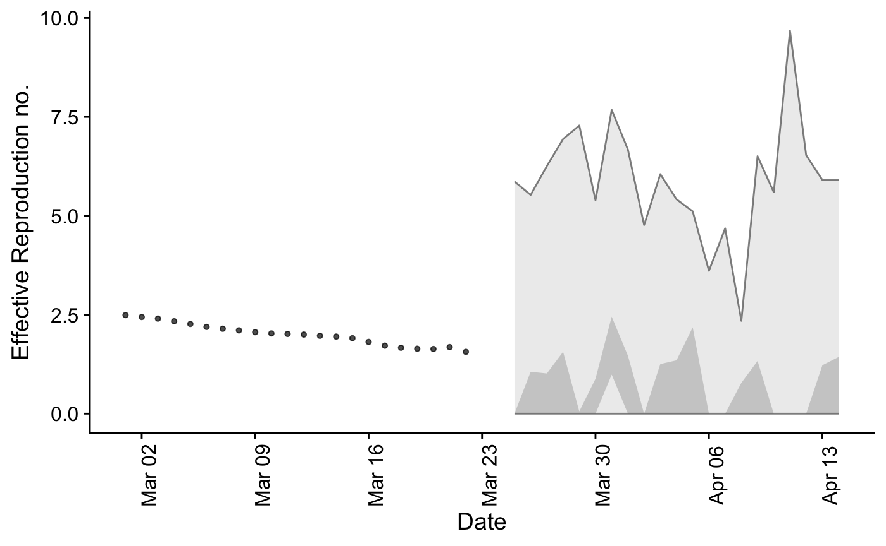

Short Term, Local Case and Reproductive Rates
short-term-predictions.RmdIntroduction
This post is basically an adapted version of the introduction materials available at https://epiforecasts.io/EpiSoon/articles/introduction.html
nc_dat <- nccovid::get_covid_state(select_county = "Forsyth") #> Using: cone as the data source cases_df <- nc_dat %>% select(cases_daily, date) %>% rename(cases = cases_daily) %>% as.data.frame() %>% filter(date>= as.Date("2020-03-01"))
rt_estimates <- EpiNow::estimate_R0(cases = cases_df, serial_intervals = as.matrix(EpiNow::covid_serial_intervals[,1]), rt_prior = list(mean_prior = 2.6, std_prior = 2), windows = c(1, 3, 7), rt_samples = 10, si_samples = 2, min_est_date = as.Date("2020-03-01"))
summarised_rt <- rt_estimates$rts %>% group_by(date) %>% summarise(rt = mean(R)) %>% select(rt, date)
rt_forecast <- forecast_rt(summarised_rt[1:20,], model = function(...){EpiSoon::bsts_model(model = function(ss, y){bsts::AddAutoAr(ss, y = y, lags = 10)}, ...)}, horizon = 21, samples = 10)
rt_scores <- score_forecast(fit_samples = rt_forecast, summarised_rt) rt_scores #> # A tibble: 21 x 11 #> date horizon dss crps logs bias sharpness calibration median #> <date> <int> <dbl> <dbl> <dbl> <dbl> <dbl> <dbl> <dbl> #> 1 2020-03-25 1 1.70 0.590 1.54 -0.200 0 0.0209 1.59 #> 2 2020-03-26 2 1.06 0.421 1.56 -0.200 1.55 0.0209 0.309 #> 3 2020-03-27 3 2.07 0.738 1.95 0 0.828 0.0209 0.466 #> 4 2020-03-28 4 1.92 1.01 2.28 -0.200 1.16 0.0209 3.44 #> 5 2020-03-29 5 4.24 2.92 2.90 -0.8 0.0435 0.0209 11.7 #> 6 2020-03-30 6 2.46 1.56 2.48 -0.400 1.15 0.0209 6.44 #> 7 2020-03-31 7 1.86 0.657 1.51 0.6 1.15 0.0209 1.56 #> 8 2020-04-01 8 1.95 0.673 1.80 0.200 1.99 0.0209 1.63 #> 9 2020-04-02 9 0.929 0.742 1.77 -0.8 0 0.0209 2.81 #> 10 2020-04-03 10 1.41 0.765 2.00 -0.400 1.57 0.0209 2.49 #> # … with 11 more rows, and 2 more variables: iqr <dbl>, ci <dbl>
summarise_scores(rt_scores) #> Warning: attributes are not identical across measure variables; #> they will be dropped #> # A tibble: 9 x 8 #> score bottom lower median mean upper top sd #> * <chr> <dbl> <dbl> <dbl> <dbl> <dbl> <dbl> <dbl> #> 1 bias -0.8 -0.400 -0.200 -0.219 0 0.40 0.340 #> 2 calibration 0.0209 0.0209 0.0209 0.0209 0.0209 0.0209 0 #> 3 ci 2.87 5.05 5.41 5.45 6.22 7.57 1.30 #> 4 crps 0.372 0.456 0.657 0.773 0.742 2.24 0.568 #> 5 dss 0.264 1.22 1.57 1.63 1.95 3.35 0.849 #> 6 iqr 1.15 1.99 2.76 3.15 3.35 9.22 2.52 #> 7 logs 0.940 1.51 1.76 1.78 2.01 2.82 0.526 #> 8 median 0.169 0.677 1.59 2.25 2.49 9.05 2.60 #> 9 sharpness 0 0 0.907 0.789 1.16 1.95 0.711
summarised_rt_forecast <- summarise_forecast(rt_forecast)
summarised_rt_forecast #> # A tibble: 21 x 9 #> date horizon median mean sd bottom lower upper top #> <date> <int> <dbl> <dbl> <dbl> <dbl> <dbl> <dbl> <dbl> #> 1 2020-03-25 1 0 1.50 2.34 0 0 0 5.87 #> 2 2020-03-26 2 1.05 1.46 1.77 0 0 1.06 5.53 #> 3 2020-03-27 3 0.559 2.05 2.60 0 0 1.02 6.26 #> 4 2020-03-28 4 0.781 2.18 2.73 0 0 1.56 6.94 #> 5 2020-03-29 5 0.0293 1.93 2.70 0 0 0.0587 7.28 #> 6 2020-03-30 6 0.779 1.93 2.24 0 0 0.882 5.40 #> 7 2020-03-31 7 2.08 2.67 2.13 0 0.987 2.45 7.68 #> 8 2020-04-01 8 1.34 1.92 2.27 0 0 1.46 6.67 #> 9 2020-04-02 9 0 0.748 1.51 0 0 0 4.77 #> 10 2020-04-03 10 1.06 1.86 2.08 0 0 1.25 6.05 #> # … with 11 more rows
plot_forecast(summarised_rt_forecast, EpiSoon::example_obs_rts)

case_forecast <- forecast_cases(cases_df, rt_forecast, serial_interval = EpiSoon::example_serial_interval)
case_scores <- score_case_forecast(case_forecast, cases_df)
summarised_case_forecast <- summarise_case_forecast(case_forecast) summarised_case_forecast #> # A tibble: 21 x 9 #> date horizon median mean sd bottom lower upper top #> <date> <int> <dbl> <dbl> <dbl> <dbl> <dbl> <dbl> <dbl> #> 1 2020-03-25 1 0 3.5 5.30 0 0 0 15 #> 2 2020-03-26 2 2 2.8 3.52 0 0 2 11 #> 3 2020-03-27 3 0.5 4.2 7.77 0 0 1 22 #> 4 2020-03-28 4 2 4.8 8.84 0 0 4 29 #> 5 2020-03-29 5 0 6.5 10.3 0 0 0 27 #> 6 2020-03-30 6 1.5 13.1 25.0 0 0 2 73 #> 7 2020-03-31 7 4 19.4 39.5 0 0 5 125 #> 8 2020-04-01 8 1.5 25.7 68.6 0 0 3 220 #> 9 2020-04-02 9 0 27.7 85.5 0 0 0 271 #> 10 2020-04-03 10 0.5 32.6 64.0 0 0 1 177 #> # … with 11 more rows
plot_forecast(summarised_case_forecast,cases_df)

Iterative Fitting
it_rt_forecast <- iterative_rt_forecast(summarised_rt, model = function(...){ EpiSoon::bsts_model(model = function(ss, y){bsts::AddAutoAr(ss, y = y, lags = 10)}, ...) }, horizon = 7, samples = 10, min_points = 4)
it_rt_forecast #> # A tibble: 6,230 x 5 #> forecast_date sample date rt horizon #> * <chr> <int> <date> <dbl> <int> #> 1 2020-03-09 1 2020-03-10 2.45 1 #> 2 2020-03-09 2 2020-03-10 2.93 1 #> 3 2020-03-09 3 2020-03-10 3.26 1 #> 4 2020-03-09 4 2020-03-10 1.71 1 #> 5 2020-03-09 5 2020-03-10 2.54 1 #> 6 2020-03-09 6 2020-03-10 2.60 1 #> 7 2020-03-09 7 2020-03-10 2.38 1 #> 8 2020-03-09 8 2020-03-10 2.95 1 #> 9 2020-03-09 9 2020-03-10 1.83 1 #> 10 2020-03-09 10 2020-03-10 2.31 1 #> # … with 6,220 more rows
it_cases_forecast <- iterative_case_forecast(it_fit_samples = it_rt_forecast, cases = cases_df, serial_interval = EpiSoon::example_serial_interval) it_cases_forecast #> # A tibble: 6,230 x 5 #> forecast_date sample date cases horizon #> * <chr> <dbl> <date> <int> <int> #> 1 2020-03-09 1 2020-03-10 0 1 #> 2 2020-03-09 1 2020-03-11 0 2 #> 3 2020-03-09 1 2020-03-12 0 3 #> 4 2020-03-09 1 2020-03-13 0 4 #> 5 2020-03-09 1 2020-03-14 0 5 #> 6 2020-03-09 1 2020-03-15 0 6 #> 7 2020-03-09 1 2020-03-16 0 7 #> 8 2020-03-09 2 2020-03-10 0 1 #> 9 2020-03-09 2 2020-03-11 0 2 #> 10 2020-03-09 2 2020-03-12 0 3 #> # … with 6,220 more rows
All Together
model_eval <- evaluate_model(summarised_rt, cases_df, model = function(...){ EpiSoon::bsts_model(model = function(ss, y){bsts::AddAutoAr(ss, y = y, lags = 10)}, ...) }, horizon = 21, samples = 10, serial_interval = EpiSoon::example_serial_interval)
plot_forecast_evaluation(model_eval$forecast_rts, summarised_rt, horizon_to_plot = 7)

plot_forecast_evaluation(model_eval$forecast_cases, cases_df, horizon_to_plot = 14)